T3A
The Seesaw Hall
Long stone seesaws over a deep pit tilt toward the side with more weight on it, and that includes your enemies. A tilting bridge follows, and archers watch from the side ledges.

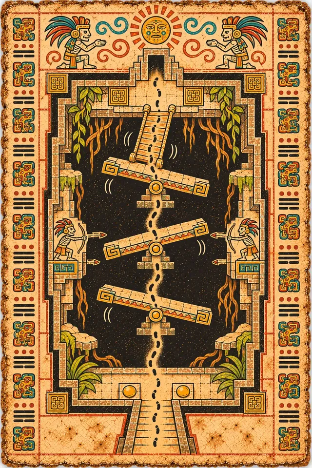

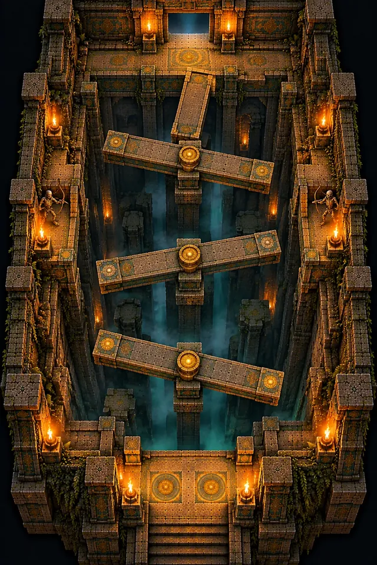
The Climb
The temple starts to move: seesaws, turning discs, vanishing paths and gears.
“The temple learned to move, so no thief would find the same path twice.”
K'in
From here on, rooms combine mechanics. The floor tilts under your weight, platforms phase in and out on a beat, the day signs become a language, and K'in can only show you the way once. The tier ends in the Gearwarden's arena.
T3A
Long stone seesaws over a deep pit tilt toward the side with more weight on it, and that includes your enemies. A tilting bridge follows, and archers watch from the side ledges.



T3B
Rotating stone discs, carved like calendar wheels, spiral up a tall well at different speeds. The Key Orb waits on the highest one.
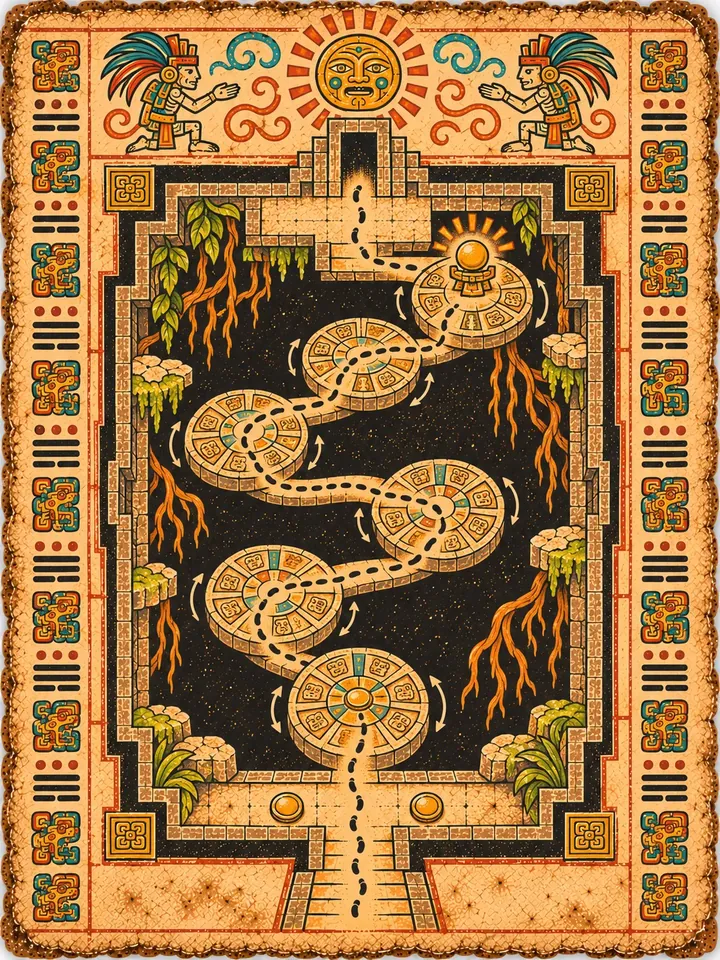
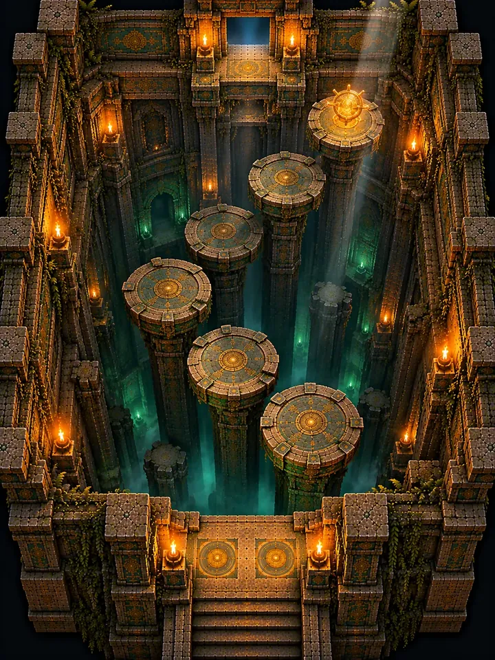
Then the Portal Chamber, and up.
WELL
A square shaft with three stone calendar wheels stacked over a sacred well. Every stone carries one of the five day signs. K'in calls a sign, and every stone that wears it glows, shakes and drops. Then the wheels click round under your feet.
Enemies fall too, and the Risen can't read. Fight them on the signs that are about to go. A fall lands you on the wheel below; the well costs far more. From Dawn to Eclipse the calls speed up, until K'in stops telling you what falls and tells you only what holds.
Five glyph drums stand on the rim. Shoot one, and the next call favours that sign. It's the first time you tell the temple what to do. On later runs she stops saying the names, and you have to read them.
Then the Portal Chamber, and up.

T3C
Square platforms flicker between solid stone and glowing outlines over a void, in three colour-keyed groups. K'in pulses on the beat.
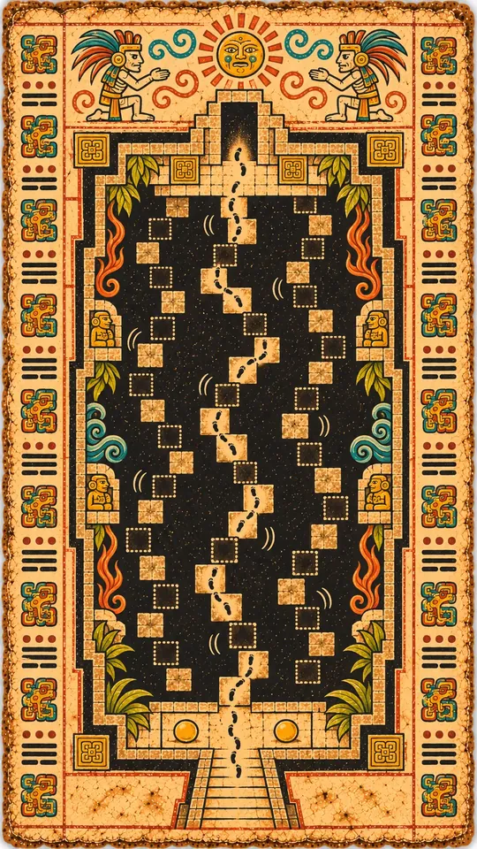
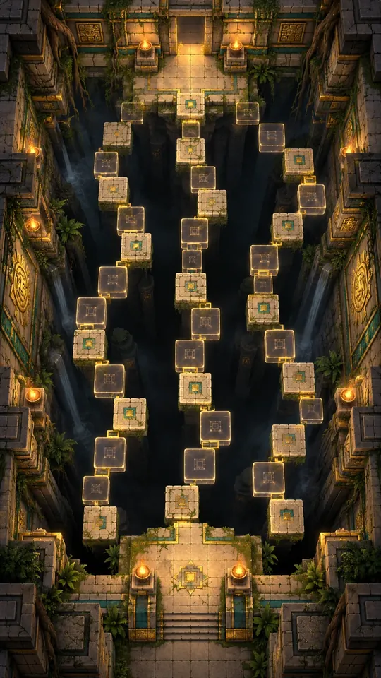
T3D
Play K'in's song back on the song stones, and for a moment a winding path of floating steps appears over a pit. Then it is gone, and you walk it from memory while Stone Sentries patrol below.
Or lower your goggles, and pay in Focus to see the whole path. You may see more than she showed you.
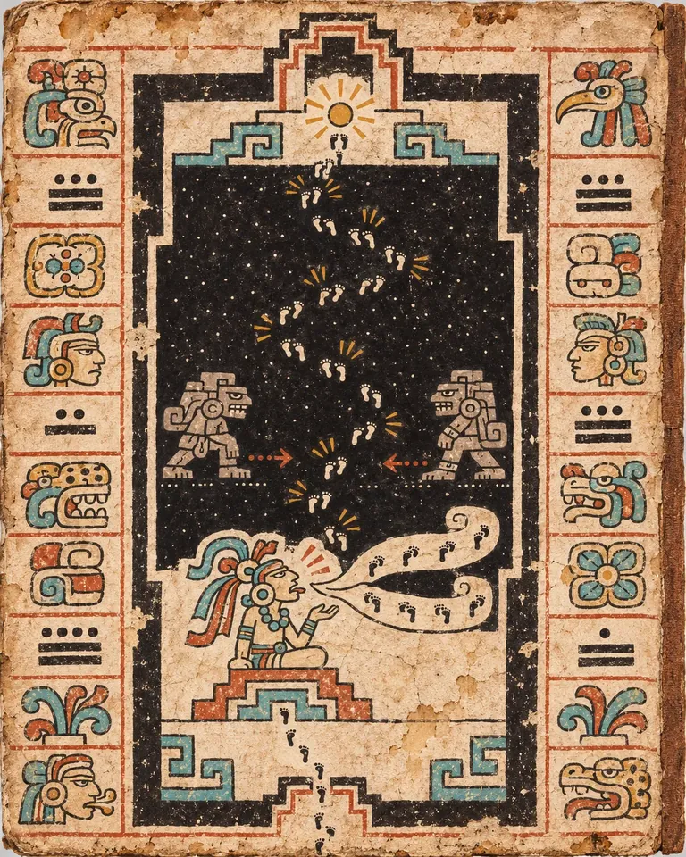
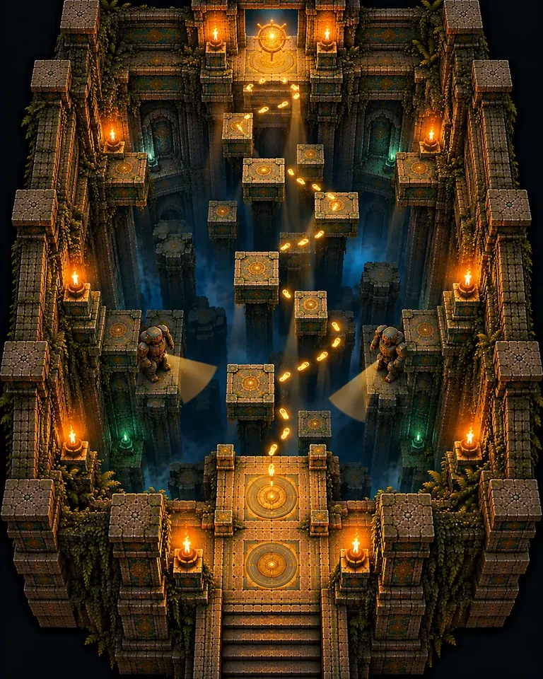
Then the Portal Chamber, and up.
T3E
A mechanical shaft of huge turning stone gears, lifts, chains and timed wall switches.
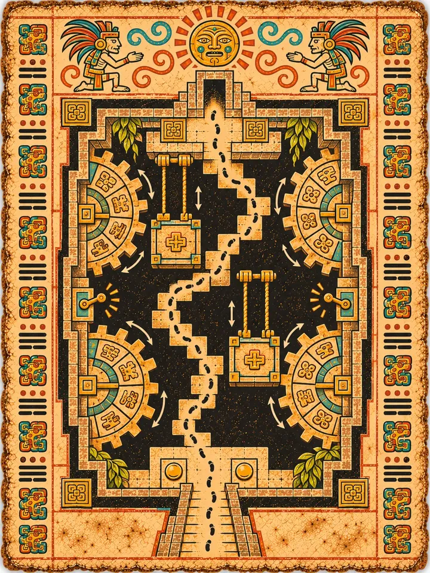
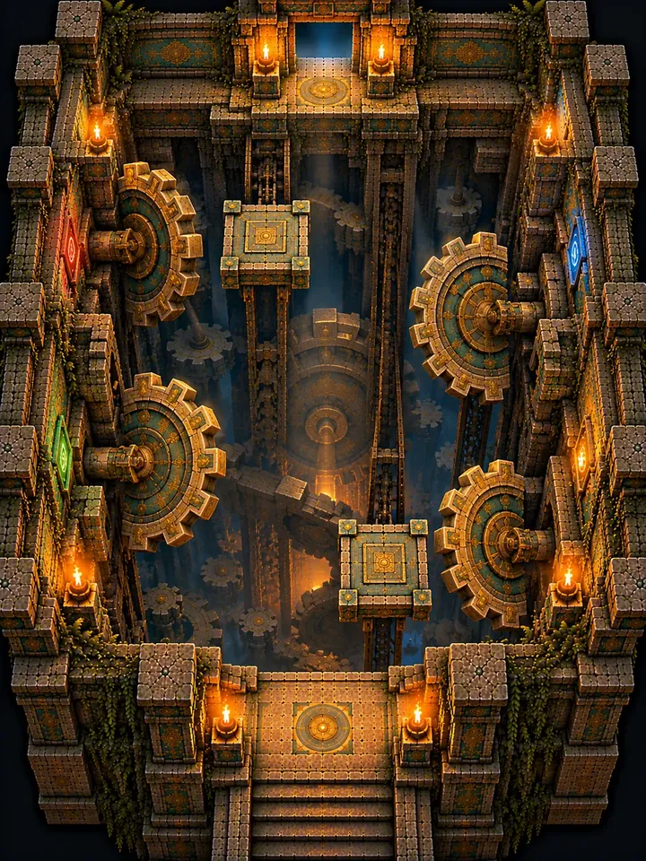
B1
A circular arena with a rotating gear ring and four steam-vent pillars. The Gearwarden, a nine-metre construct of carved blocks and gears around an amber core, charges. Make it crash into a pillar to expose the core.
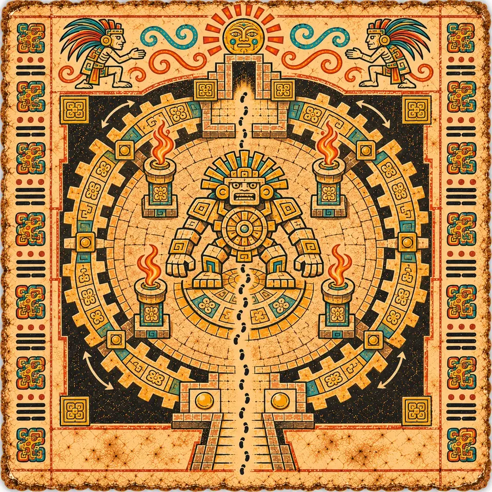
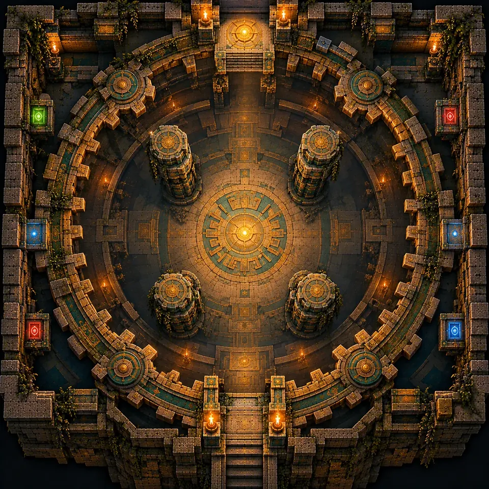

Then a Spirit Shrine to rest, and the Portal Chamber.

T3-01

T3-02

T3-03

T3-04

T3-05

T3-06